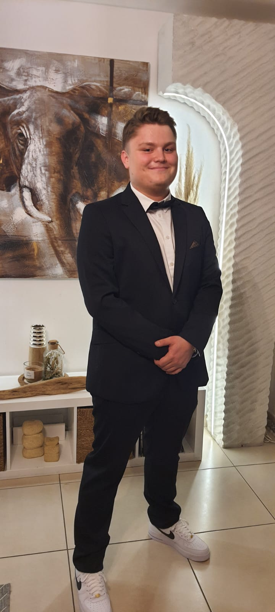
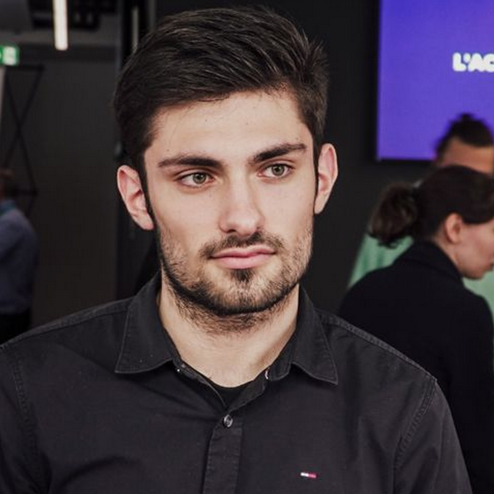
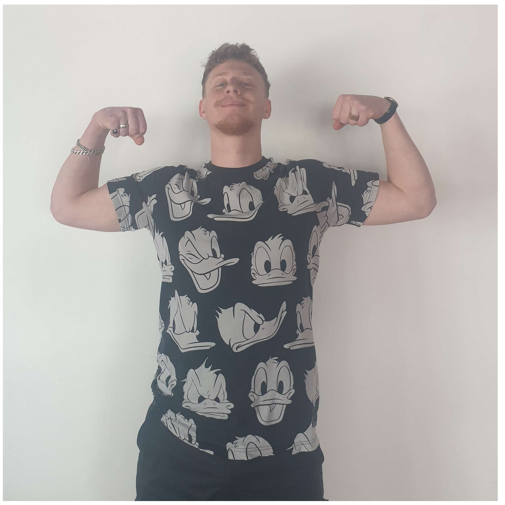

A group of 6 students are going on an Erasmus trip to Lodz in Poland to improve their professional skills and have an enriching cultural experience.
Through this Erasmus, we will be able to discover a culture, a way of life and a way of working completely different from France.
Erasmus presentation
Presentation article about our Erasmus
1. Geographical location: Lodz, Poland. (Damien)
Lodz is the fourth biggest city of Poland. The city is situated in the center of Poland, near Warsaw the capital. The city is in the Lodzki region. The name come from the river Lodzka near the city who cross the whole region.
2. University: Lodz University of Technology (Damien)
The University where we will study is called by several names: Lodz University of Technology (TUL) but also Politechnika Łódzka. It is a good university, with good ranks in Europe. In 2022, there is about 25 000 students and 1830 researchers and teachers who works in it. The university took parts in several greats building made from bricks with a beautiful environment around it, like the lake behind the main building.
3. Population: (Damien)
There are about 700 000 inhabitants in Lodz city and about 1 million with the agglomeration. The city is big as Paris in term of built areas and is like Lyon city in France.
Lodz is an old city; the most ancient writings came from the XIV century. It is a very industrial oriented city and was called “The Manchester of Poland” because the city was specialized in textile for decades since the industrial revolution. Lodz has a particular role in the history of Poland.
4. Interesting place: (Eloi)
5. How to get there? (Eloi)
There are several ways to go in Lodz because the city has several train stations and an airport. We planned to go in Lodz by plane around the twenty-four th of February.
6. Student life: (Romain M)
Student life in Lodz, Poland is very lively and diverse. There are many universities and colleges in the city. Cultural life in Lodz is rich and varied, with many museums, theatres and cinemas. The city is also known for its Art architecture and textile heritage. Students can also take part in sports activities, such as football, basketball and handball, as well as clubs and student associations. There are about 144,000 students studying in Lodz. The city has many bars, clubs and restaurants and is known for being very quiet during the day but with a great festive and joyful atmosphere at night.
7. Public transports: (Titouan ou Romain M)
Łódź has an extensive network with several tram lines (tramwaj), day and night buses operating from 5:30 a.m. to midnight.
Night Buses:
N1 ALESANDRÓW ŁÓDZKI – ANDRESPOL
N2 ŚWITEZIANKI – MARATOŃSKA
N3 SZCZECIŃSKA (CMENTARZ) – DUBOIS or SZCZECIŃSKA (CMENTARZ) – CHOCIANOWICE-IKEA
N4 NOWOSOLNA - CHOCIANOWICE-IKEA
N5 11 LISTOPADA – JANÓW
N6 IMIELNIK NOWY – DĄBROWA
N7 TELEFONICZNA ZAJ. MPK - MARATOŃSKA
Tramways:
Line 1: STRYKOWSKA - DWORZEC ŁÓDź CHOJNY
Line 2: SZCZECIŃSKA - DĄBROWA
Line 3: WYCIECZKOWA - AUGUSTÓW
Line 4: HELENÓWEK - DĄBROWA
Line 5: DWORZEC ŁÓDŹ ZABIENIEC - KURCZAKI
Line 6: STRYKOWSKA - KURCZAKI
Line 7: KOZINY - ŚLĄSKA
Line 8: CHOCOŁA - AUGUSTÓW
Line 9: KONSTANTYNÓW - AUGUSTÓW
Line 9A: ZDROWIE - AUGUSTÓW
Line 10: WYSZYŃSKIEGO - AUGUSTÓW
Line 11: HELENÓWEK – CHOCIANOWICE - IKEA
Line 12: WYSZYŃSKIEGO - STOKI
Line 13: SZCZECIŃSKA - ŚLĄSKA
Line 14: WYSZYŃSKIEGO - DĄBROWA
Line 15: TELEFONICZNA - KURCZAKI
Line 15 A: TELEFONICZNA - CHOCIANOWICE - IKEA
Line 16: ZGIERZ - KURCZAKI
Line 16 A: HELENÓWEK – PLAC NIEPOLEGŁOŚCI
Line 41: PLAC NIEPOLEGŁOŚCI - PABIANICE
Line 43: LUTOMIERSK - TELEFONICZNA
Line 46: ZDROWIE - OZORKÓW
8. Tips from IR4: (Romain M.)
During our research on Lodz and Poland in general, we had the idea to contact two IR4 students who had been
to Lodz so that they could enlighten us on our research and explain in more detail the way of life in Lodz.
They were then able to give us some tips for our Erasmus on many topics.
The first thing we talked about was the subject of accommodation.
The two students told us that there are three kinds of accommodation which are
- the dormitories which are the cheapest
- university rooms which are a bit more expensive but offer the comfort of having your own flat
- classic flats which are a risk in Poland
As far as food is concerned, they advised us to go to the university restaurant where meals are only 3 euros.
One of the students advised us to visit the Pietrovska street, which for him is the most beautiful to see.

Romain Mahot -
Third year student in computer science

Romain Jaffré - The crazy loner
Hi! I am an introvert person, so be alone isn't a problem for me, I'm OK with that. I should be the most serious guy of our group (the only one). I planned to have fun and visit a lot during my Erasmus as soon as I will have finish my work, in group or alone. I really want to enjoy my travel by partying, visiting, discovering people and I hope it will be the best experience in my life.

Eloi Anquetil - The Muscle Mommy
I've got more muscle than brain.
Damien Laning -
Third year student in computer science
Clément Choupault -
Third year student in computer science
Titouan Reulier -
Third year student in computer science